"⌚WE MIGHT NOT REMEMBER DAYS, BUT MOMENTS, THAT'S EXPENSIVE⌚"
As I did this personal website while finding the contents, I've come to realize there are various events happened in my 20 years of life. Therefore, in this section I am going to share with you few exciting and memorable events I have encountered! The events are mostly related to my school life, kpop world and some might be random.🙂
2015 BTS LIVE TRILOGY IN MALAYSIA : THE RED BULLET
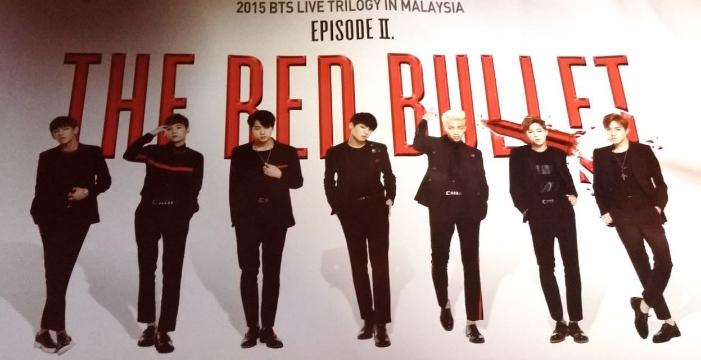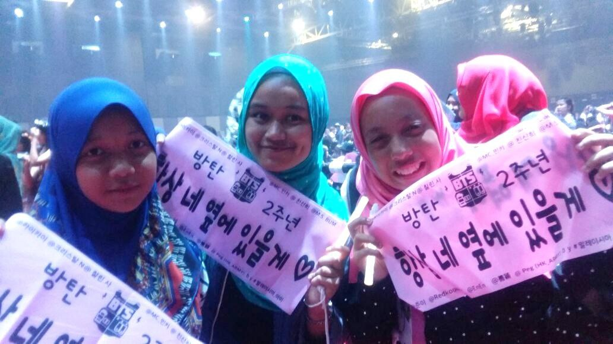
When we said "BTS", the first thing that came to someone's mind might be a South Korean Boy Group who is currently the most well-known group in the world. Before BTS became more popular, they came to Malaysia once. I felt truly grateful to witness their concert when they are still unfamiliar in the eyes of the world. The concert was held on 6 June 2015 located at Megastar Arena, Kuala Lumpur. I went to the concert with my little sister, my cousin, and my mom! I am very thankful because my mom allowed me to meet my favourite group. Besides, my mom also like one of the members which is Jungkook. My mom said Jungkook is like a son to her.😂 One of the funniest things I remembered till this day would be when I met BTS choreographer which is Mr. Son Sung-deuk and their dance crews! I should asked for a selfie but guess what, because I was too nervous and can't believe my eyes, I just freeze..I felt the sense of regret up to this day because I freeze in front of them instead of asking for a selfie for memory purpose. It was only the choreographer and dance crews walked beside me, imagine if it's BTS? I might fainted. 😂 This incident happened before the concert started. The concert was held for two hours and it was absolutely worth it. Picture above was us after the concert. We looked tired but we had so much fun. We also undergoing post syndrome concert after that😂 A sense of loneliness and a sudden hit of reality.. It's been seven years since BTS came to Malaysia. Someday, I am hoping for a miracle that they will come to this country again with complete members. Come here Bangtan, you have a lot of A.R.M.Y here! (BTS fandom name) 💜
p/s : kindly ignore our not-glow-up face that time.😂
MAYDAN EVENT : MEET AND GREET THE AMBASSADOR
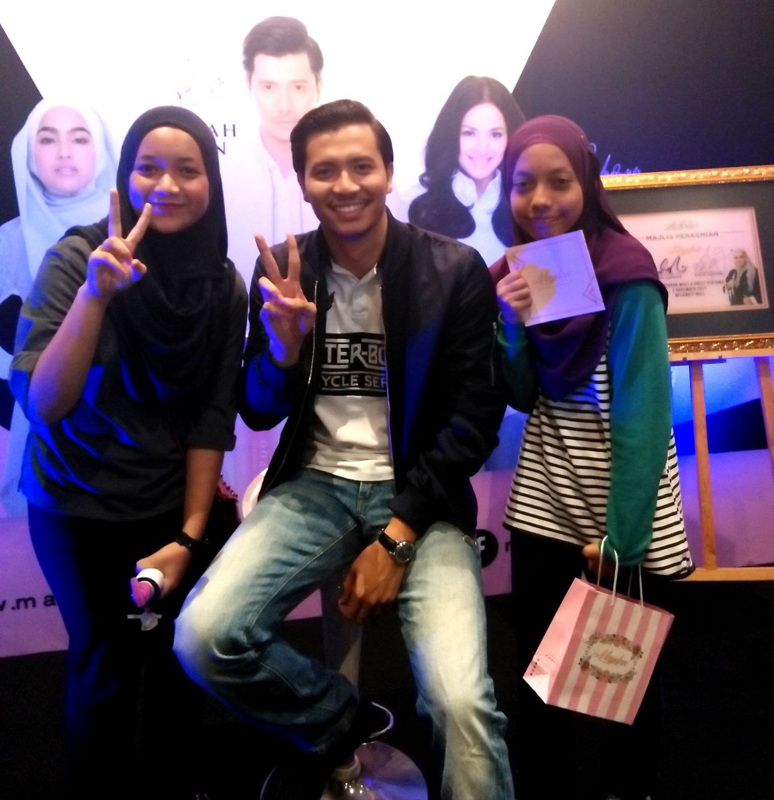
This event happened somewhere in 5 November 2017. Actually, I did not plan to join this event at all. It was a coincidence as my aunt brought my sister and I hangout at Melawati Mall. When we arrived, there were banners all over the area regarding the event. My sister and I took this opportunity to join this event.😂We wanted to meet Fazura as she was part of the ambassador too. However, Fazura could not attend that day as she got another schedule.
In order to meet and greet including the photo session, we need to buy the products which are shampoo or body wash above RM50. Therefore, my sister and I brought the products and automatically got the pass to meet and greet Fattah Amin. He is very, really, and super handsome in real life. He is so tall and polite. During this event, Fattah Amin sang few of his song including "Wanita Terakhir." It was my favourite song and I am still listens to it until now. I hope someday I am able to meet Fattah Amin again together with his wife, Fazura.😊 They are my favourite Malaysian actor and actress.
BURN THE STAGE : THE MOVIE
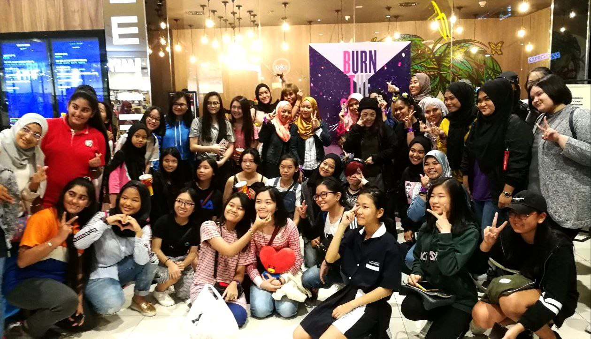
This movie event was conducted by Malaysian fans of BTS. The date was on 18 November 2018. What a beautiful date, right? The organizer of this event was one of the admin of Malaysian Fansite on Twitter. This movie event took place at MyTown where we gathered and watched it together. It was memorable as the vibe were truly like a concert! Some fans even brought lightstick with them and it feels like BTS was right in front of us. After the movie ended, we took pictures together in front of the cinema hall. Guess who captured that group picture above? Yes, it was my dad. I am so blessed to have supportive parents. They even accompanied my sister and I to watch this movie. This movie was quite melancholic as it shows BTS journey and their ups and downs. My sister already cried beside me and the cinema filled with silence during certain emotional part. We are truly proud to watch BTS and their growth. Before we went separate way, I got the opportunity to have short conversation with the main organizer, Blossy. She is very kind and approachable. She even prepared freegifts to those who joined this event. Let's wait until the day BTS will come to Malaysia again!😁
PREFECT HI-TEA OF 2019
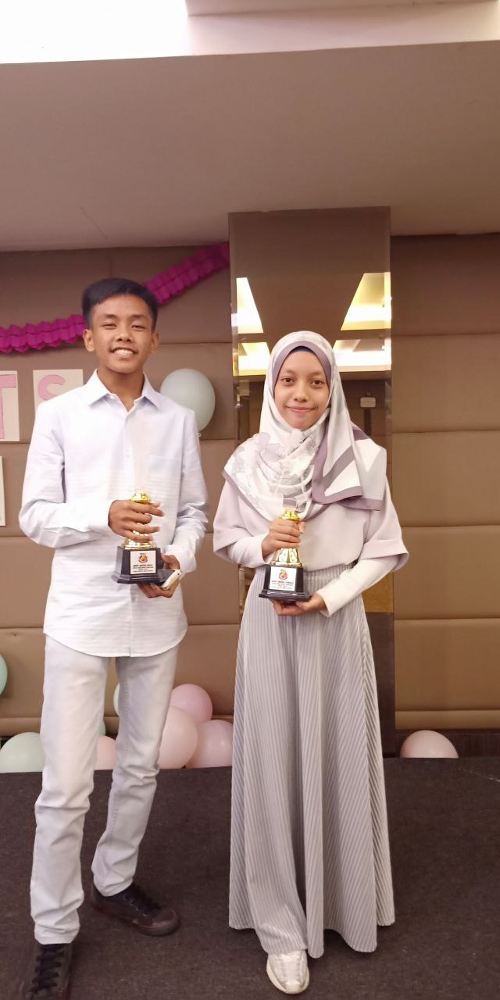
Every year, prefect of Sekolah Menengah Kebangsaan Datok Lokman will conducted this event. This Prefect Hi-Tea was on 8 September 2019, which was the last Prefect Hi-Tea for us, batch 02. There were few exciting games such as musical chair and mystery box with prizes for the winners. Not only that, there were dress-up competition as well but we did not know about it, which means the judges that were among our teachers choose the winners in silence. The dress theme was pastel and stripe. I did not put any expectation as everyone was very fashionable and dress up beautifully that time. I was wearing the bare minimum and just mix and match according to the dress theme. Therefore, when the emcee announced my name as a winner for dress up competition, I was completely shocked. The other winner which is Abid was shocked as well.😂 He said he bought the clothes at the very last minute and he expected nothing. Basically, Abid is the winner among boys and I am the winner among girls in this dress up competition. We are so grateful and honoured to receive this award and the trophies in our final year as a school prefect. Thank you to the judges who voted for Abid and I. We had wonderful memories to remember of our Prefect Hi-Tea.
GRADUATION DAY
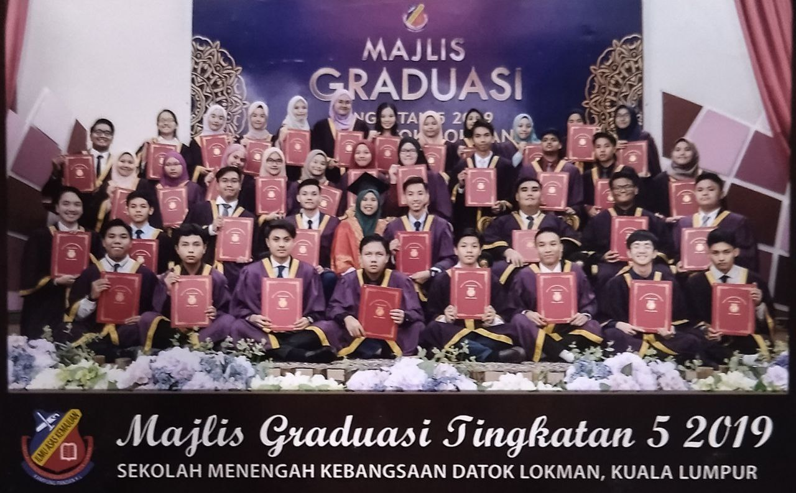
One of the most highlighted event in 2019 was my Graduation Day. It is like a signal of farewell. I was happy but I already felt the longingness and sadness of the thought leaving my school, which I considered as my safe place.
Our graduation day took place on 21 September 2019. There was a haze that time. But the air quality index was under control and it won't stop us to cherish every moment. The picture above is my entire class, 5A2 with our class teacher.💖
5A2 LUNCH AND FAREWELL
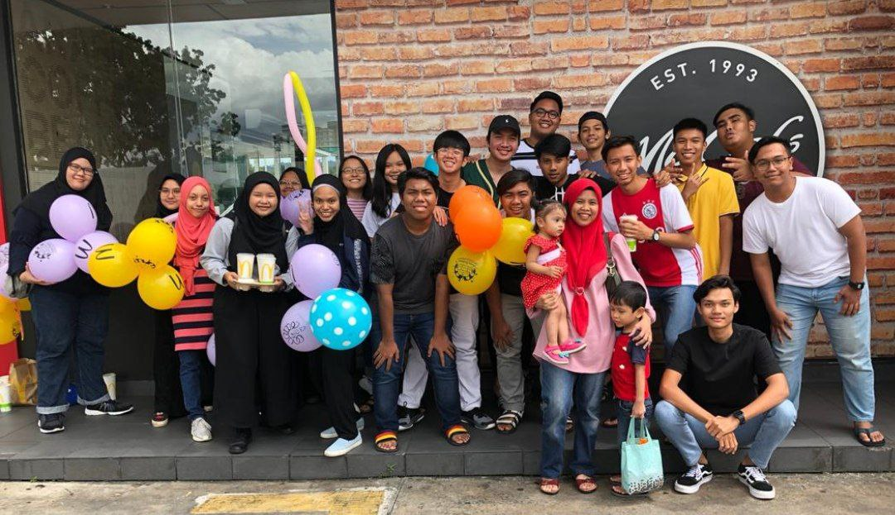
Before we took a long holiday while waiting for our SPM result, we did a small event on 17 December 2019, which was located at McDonald's Ampang, Selangor. This small event attended by my classmates and my class teacher. Our class teacher brought her adorable kids too that time.😆 We ate and talked to each other quite long time. It was memorable moment. It was also a hit of reality for me knowingly I will rarely see each of them after that. I am thankful to met all of my 5A2 classmates. Despite some of them somehow annoyed me a lot, I do treasure all of them the same.💖
As of 2022, it's been three years since we met each other. Where is the reunion plan going?🤣 Let's meet again someday buddies!
COVID-19 VACCINATION DAY
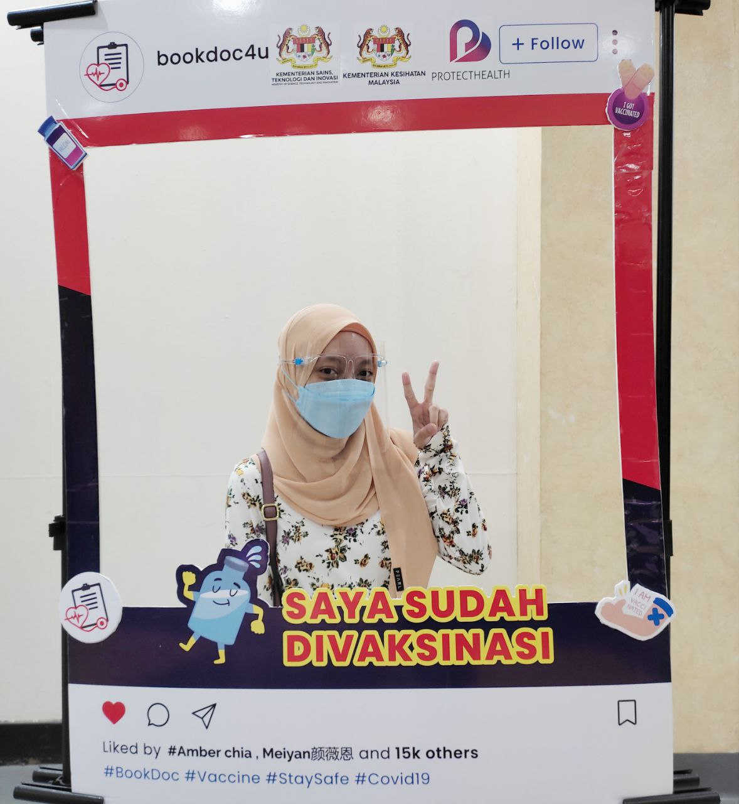
14 July 2021 was my very first time getting the vaccine. I got my first Covid-19 vaccine at World Trade Centre Kuala Lumpur (PWTC).
No one knows except my family and closest friends. I was actually suffered with anxiety throughout the Covid-19 pandemic. Therefore, I felt so anxious to take a vaccine knowing the fact I need to go through the procedure alone as no guardian allowed for people above 18 years old. But I felt quite relieved as my mom waited for me outside the venue. Few moments after got my vaccine, my heart beating so fast and I was afraid that I might collapsed. Perhaps, I was too nervous that time. I felt sorry for my mom that time because she was truly worried about me. But I survived. The procedure was quite smooth as well. Then, at 2 a.m., I literally shaking and turned out I caught a fever. The fever was the symbol of side effect on my first vaccination. However, I did not caught a fever for my boosters. Therefore, my first vaccination day would be unforgettable event compared to my Covid-19 boosters vaccination day. In fact, during Covid-19 boosters, I was less nervous as I already experienced the procedure before. I was able to control my social anxiety as well. * pat myself on the back *😂
TREASURE 1ST PRIVATE STAGE : TEUDAY
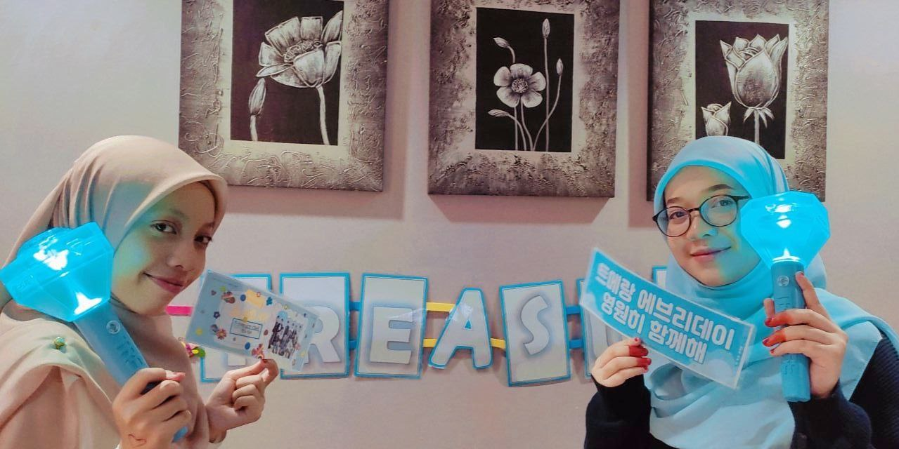
Since Covid-19 and the distance, my current favourite K-pop boy group which is Treasure held their very first online private stage. As I bought the global membership, I got the benefit such as joined their rehearsal a day before the private stage. This online event was held on 2 October 2021. Treasure performed at Olympic Hall, Seoul, South Korea but fans worldwide were able to witness their first private stage through online live-streamed. The system was quite strict as an an individual with illegal and suspicious account will be kicked out right away from the live-streamed. However, it is fair for us fans that watched it in legal ways, which was through online ticketing purchase.
Through this event, I literally learnt on how to purchase online ticket, fix technical matters such as connecting my online live-streamed account to laptop and television, and most importantly I was able to enjoy the moment. Treasure literally prove that they are one of the most powerful 4th gen boy group exists. Their charisma are undeniably great. Not only that, their powerful dance flow and stable live vocal is totally worth every penny.
During this online event, my sister and I dress up beautifully, printed banners and decorated our living room to get the concert vibe even more. We also turned on our lighstick when the event started. I had so much fun with my little sister throughout this online event. I hope someday I will be able to witness their live performance at the physical concert.😄
TREASURE DOYOUNG BIRTHDAY PROJECT
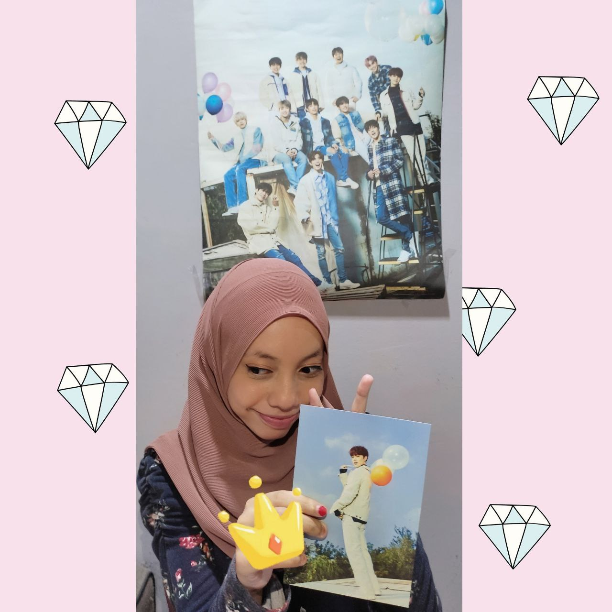
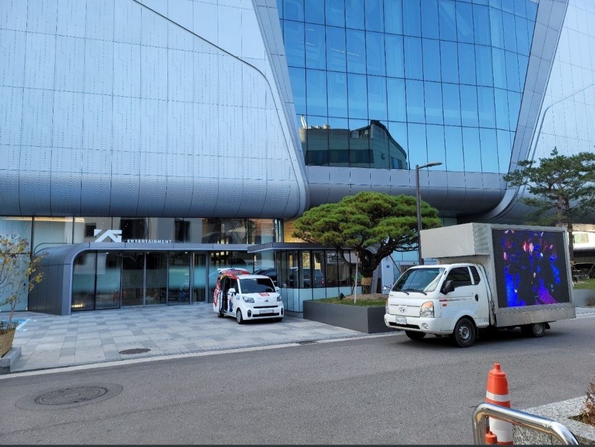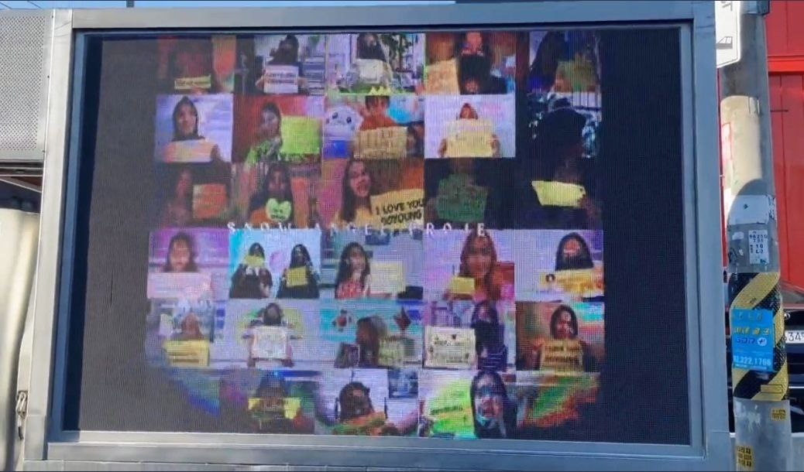
Last year, I joined Doyoung Birthday Project together with fans worldwide. The organizer was one of Doyoung's fanbase on Twitter which is DobbyGlobal. The country representative for this birthday project are mostly from South Korea, Japan, Malaysia, Indonesia, Philippines, and Thailand. Doyoung is love by many and we ensure this birthday project to be celebrated wonderfully.
The guideline for this project was quite simple where I only need to say "HAPPY BIRTHDAY DOYOUNG" in a video. Picture above was me recording a video at night because that was the only time I am free from any commitment.😂 Our videos of wishing Doyoung a happy birthday will be appeared on LED Truck. During his birthday which was on 4 December 2021, the LED truck was being placed in front of YG Entertainment Building. Surprisingly, Doyoung informed fans through social media platform that he saw every fan's birthday project for him and he is very thankful for that. I am so happy that time. It such an honour to be able to join this birthday project for my idol. It is still funny, at least to me because I did not get the opportunity to visit South Korea yet, but my video has already arrived there.😂
Manifesting going to South Korea soon!💖
CUPSLEEVE EVENT 2022
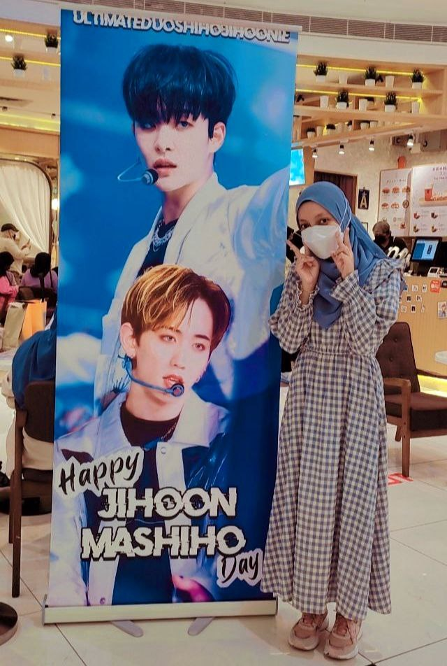
Cupsleeve event is not something unusual among K-pop fans. However, why does it called cupsleeve event? This is because whenever we attend cupsleeve event, we will usually got free gift which is a cup and cup sleeve, stickers, or sometimes an unofficial photocard. Cupsleeve event usually happens when our idol's birthday month has come. Sometimes, this cupsleeve event also meant to gathered as many fans as possible only for memory purpose.
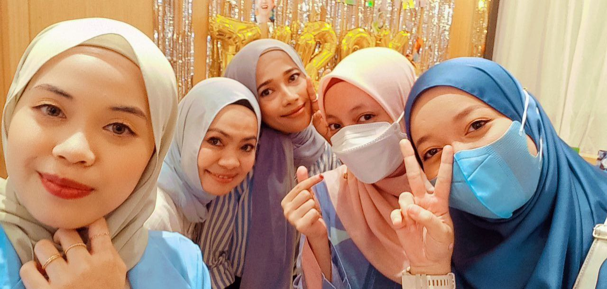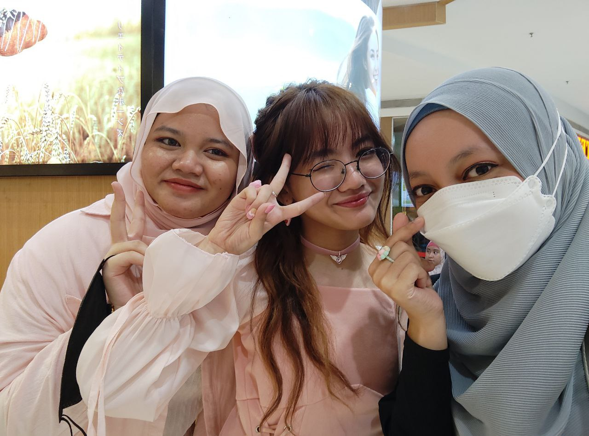
Fellow Senior Kpopers (left) & My Twitter Friends, Alin and Ain! (right)😊
Fun fact, since I stan Treasure last year, I got the opportunity to expose myself with this kind of event. This year only, I have attended three cupsleeve event with my little sister. This event is beneficial as I am able to get out from my comfort zone and socialize with fellow Kpopers. It literally helps to embrace remaining 10% extrovert inside myself.😂 I am so happy to meet new friends from various types of age. There are also Kpopers older than me that have experienced Treasure concert abroad. They literally shared with me their experiences, and even gave motivational support for me to further my study. Not only that, I also met my Twitter friends! K-pop is not just about music, but it literally connected us to one another as well. We literally able to get to know each other more.
MY HIGHLIGHTED EVENTS IN 2022
🔽
🔽
🔽
SHOPEE EVENT : SIGNED TREASURE ALBUM
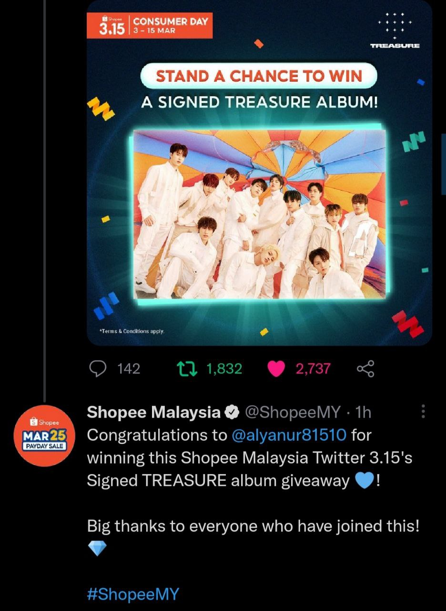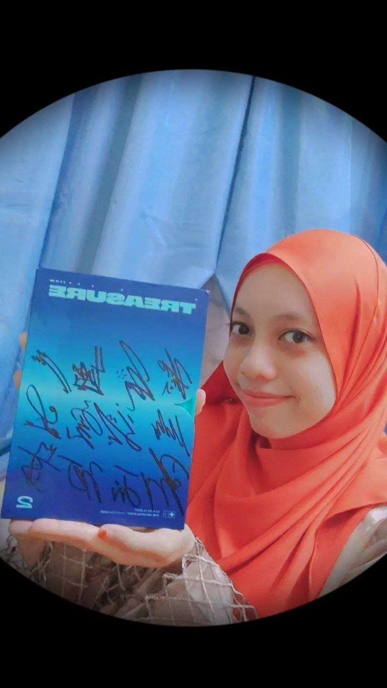
Until now, I still can't believe that I owned a signed Treasure album. It all started when I randomly joined Shopee event where fans need to tweet about favourite purchase on Shopee with creative words. I just tried my luck without expecting anything as I am well aware I need to compete with thousands of people. One day, I received a notification from Shopee and my first impression was "Is this a scammer?" and "Did Shopee direct message me to promote their voucher?"😂 When I opened the message, I was shaking for a long time and I screamed! It felt like a dream as I was chosen to be a winner. My parents are happy for me and my sister also a bit shocked and we screamed together. My Twitter friends congratulate me and they said "you're so lucky all Treasure members hold and wrote something on your album!" They also said to give some of my luck.😂 This kind of luck rarely happen to me so I was stunned. Nevertheless, I felt so grateful and I will forever keeping this signed Treasure album safe and sound.💙
EMART24 MALAYSIA x TEUME : TREASURE MAKER DAY
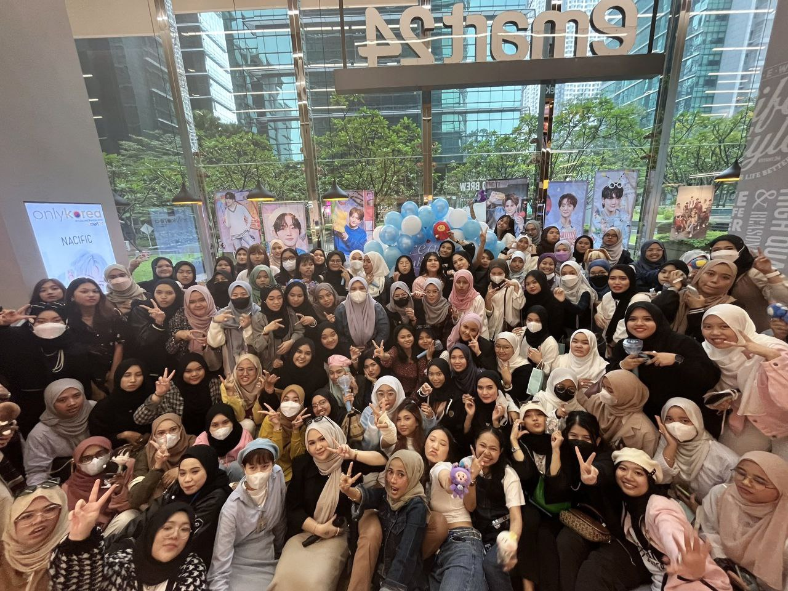
Malaysian Fansite of Treasure has conducted an event for Treasure Maker (fandom's name) gathering and collaborate with Emart24. Perhaps, this event was the biggest Treasure Maker event that ever happened. This event was successfully held on 10 September 2022 located at Emart24 Bangsar South, Kuala Lumpur. There are various activities such as Ice Breaking, Dance Competition, Dress Competition, Lucky Draw, and Picture Booth. I had so much fun as I met a lot of friends, including my Twitter friends, eat delicious food, and did exciting activities together. The place is quite large and it is suitable to organize an event like this. The main reason Emart24 became the place to organize this event is because Emart24 Malaysia are currently collaborate with Treasure to promote their products. Therefore, it was a great opportunity for fans as well because the higher possibility for Treasure and their company to notice us as they got many fans in Malaysia as well. I hope Malaysian Fansite of Treasure will hold an event like this again in the future meantime. It was so memorable and fun.💖
PROGRAM INFO FEST
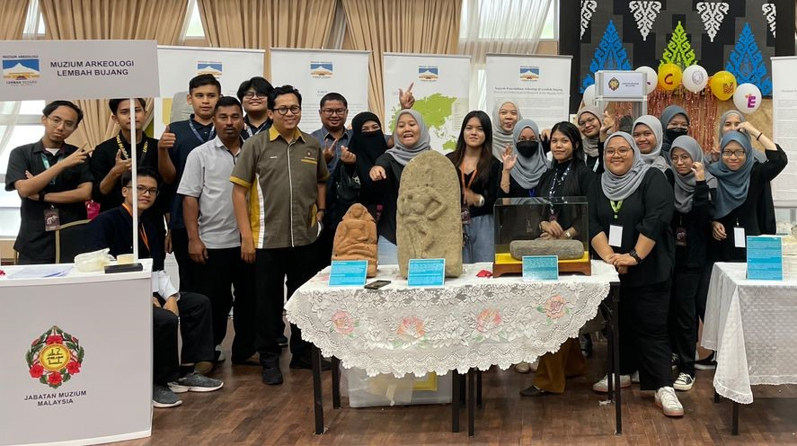
Program Info Fest was held on 8 December 2022 located at Dewan Perdana UiTM Merbok, Kedah. It started from 8 a.m. until 5 p.m. The major reason this event was held because it is related to our assignment purpose in Extension Services in Information Agencies (IMD314) course. We were suppose to handled the event according to our respective class. However, due to some reasons, we have to collaborate with the entire Information Management students. I thought the event would be dull and a mess but it turned out really well, way better than what I expected. As for my class, KIM1204B, we collaborated with Bujang Valley Archaeological Museum. There were various replica exhibited at our booth. We truly hope students that came to our booth enjoy their moment and gained new knowledge related to archeology and a piece of history.
Despite the tiring day, I had so much fun with my friends. We successfully handled our respective booth, listened to talk by invited doctor which was related to mental health and speaker from Agensi Antidadah Kebangsaan (AADK), tried new traditional games, and sight-seeing booths from other classes. It's kinda sad as we only got the opportunity to handle event during our final semester as Covid-19 pandemic hit us before. However, this makes me want to appreciate this precious memory even more.